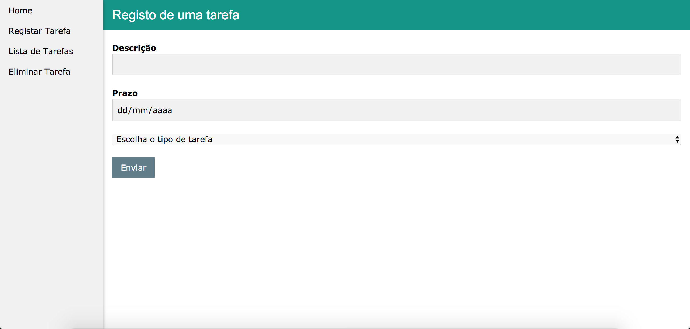
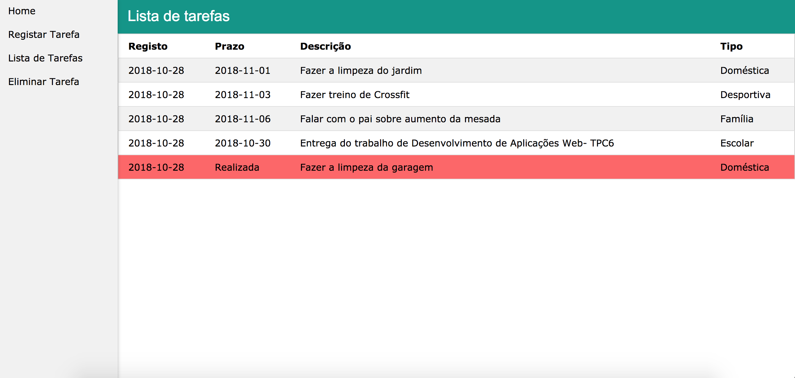
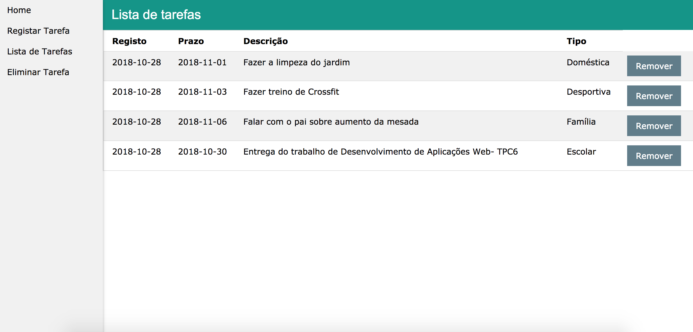

Identificador:
a79068Nome:
Joel Soares RodriguesEmail:
a79068@alunos.uminho.pt
O objetivo deste trabalho é a elaboração de um gestor de tarefas. Este gestor tem de ser capaz de efetuar as seguintes funções:
Para implementar este gestor decidiu-se que o sistema disponibiliza ao utilizador 4 páginas distintas, página principal, página de registo, página de remoção de tarefa e ainda página de apresentação da lista de tarefas.
De forma a implementar todas as funcionalidades no sistema foi elaborado um servidor em NodeJS. Este servidor apresenta duas condições iniciais que testam o método HTML, caso seja GET, testa-se o pathname do url e apresentam-se as várias páginas ao utilizador. Por outro lado, caso seja POST, são implementados as funcionalidades de remoção de uma tarefa e registo de uma tarefa.
Realçam-se alguns pormenores usados, por exemplo, no momento de inserção de uma tarefa, é calculada a data atual no servidor e adicionada ao ficheiro de dados, é adicionado também um identificador à tarefa e ainda uma flag que correponde ao estado(apagada, não apagada). Quando é removida uma tarefa é alterado o estado da mesma e passa a ser apresentada de forma diferente na lista de tarefas.
A seguir apresentam-se as várias páginas criadas durante o desenvolvimento do sistema.
| Home | Registo | Lista | Remover |
|---|---|---|---|
|

|

|

|